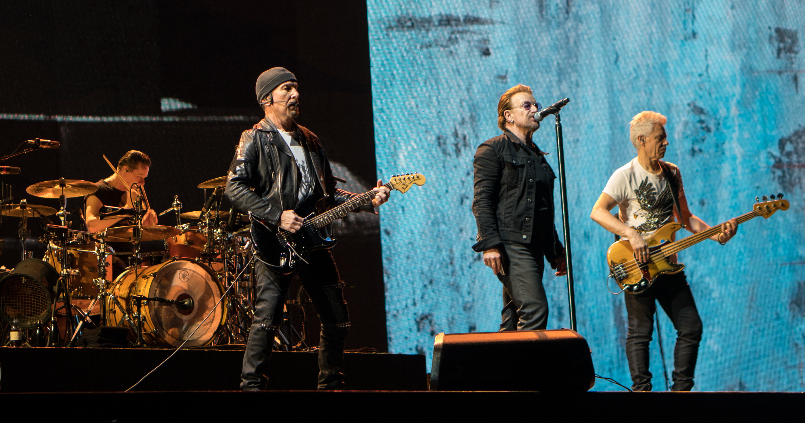

U2
Banda irlandesa de rock formada en 1976 en Dublín.

Integrantes del grupo
Bono
The Edge
Adam Clayton
Larry Mullen Jr.
Discografía
Grandes éxitos de U2
Año
Disco
"The Joshua Tree" fue el álbum más exitoso.
1987
The Joshua Tree
1991
Achtung Baby
2004
How to Dismantle an Atomic Bomb
Sitio web oficial
www.u2.com
Volver